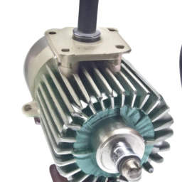
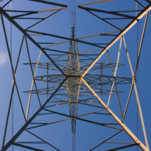
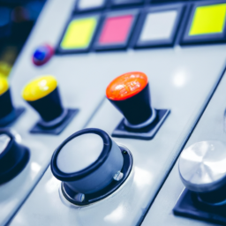

An electric train is a type of train that is powered by electricity. It uses an electric motor to convert electrical energy into mechanical energy, which allows it to move. Electric trains have become increasingly popular due to their efficiency and environmental benefits.
The key component of an electric train is the electric motor. The electric motor converts electrical energy into mechanical energy, which is used to propel the train forward. The motor is usually located in the locomotive, which is the front part of the train.
The electric motor consists of a rotor and a stator. The rotor is the rotating part of the motor, while the stator is the stationary part. When an electric current is passed through the motor, it creates a magnetic field that interacts with the magnetic field of the stator, causing the rotor to rotate.
Electric trains require a source of electricity to power their motors. This electricity can be obtained from various sources, such as overhead lines, third rails, or onboard batteries. The most common method is to use overhead lines, where the train collects electricity through overhead wires.
The electricity from the overhead wires is transferred to the train through a pantograph, which is a device that makes contact with the overhead wires. The pantograph collects the electricity and transfers it to the train's electrical system, which powers the electric motor.
Electric trains also have a control system that allows the driver to regulate the speed and direction of the train. The control system consists of various components, including a throttle and a braking system. The throttle controls the amount of electrical power supplied to the motor, while the braking system controls the speed and stops the train.
The control system is operated by the driver from the driver's cabin. The driver can adjust the throttle to increase or decrease the speed of the train. The braking system allows the driver to apply brakes gradually or abruptly, depending on the desired speed reduction.